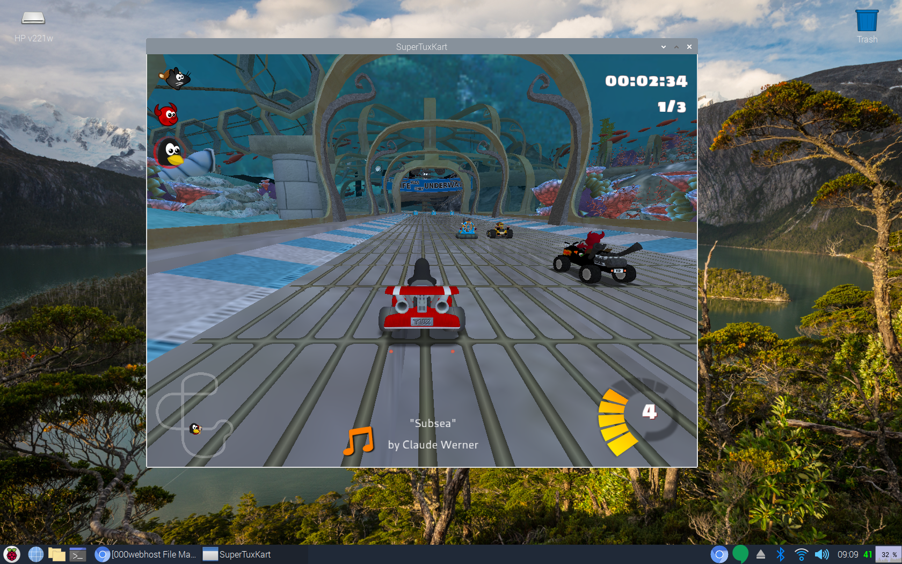

If you know me, you know how much I enjoy searching the internet to find games that can run on the raspberry pi. It's a little too much fun. So far I had found Flare, Minetest, GNUjump, and XSoldier. All pretty fun. But I may have just found one that leaves them all in the dust. It's called SuperTuxKart, a racing game with Tux (the Linux mascot) and friends. I was pretty shocked by it. The graphics are excellent and it runs surprisingly well. There are tons of unique tracks to choose from (most can run at least 30 FPS), plus the gameplay is really good. The controls and kart handling feel nice.
There is even a story mode, but it's a little strange. Something about Tux needing to save his "hippie king" from an alien. I don't know if I'd reccomend it. I think just stick with Grand Prix or Classic Race. You can make the races really long (lots of laps) or super short (one lap) and throw in a ton of racers for an extra challenge. It's got just the right balance of a serious racing game and a playful kart game. If you want to install on your own Pi: sudo apt-get install supertuxkart. Have fun racing!